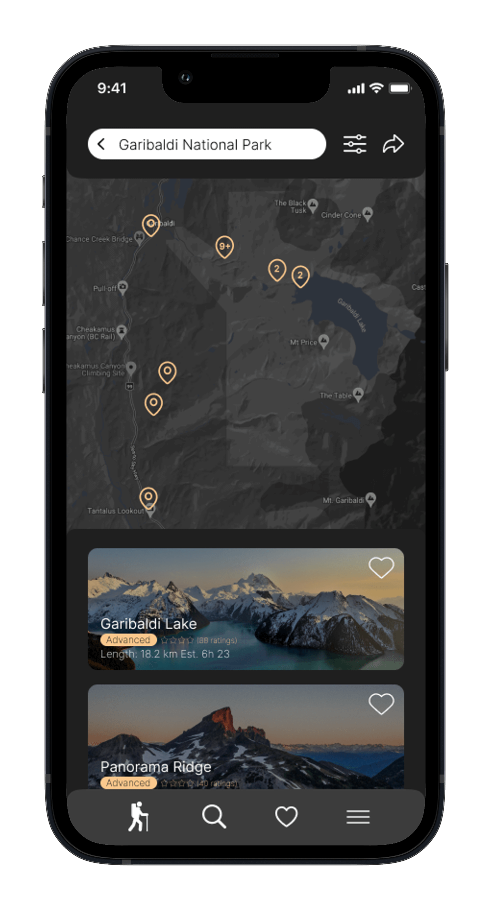
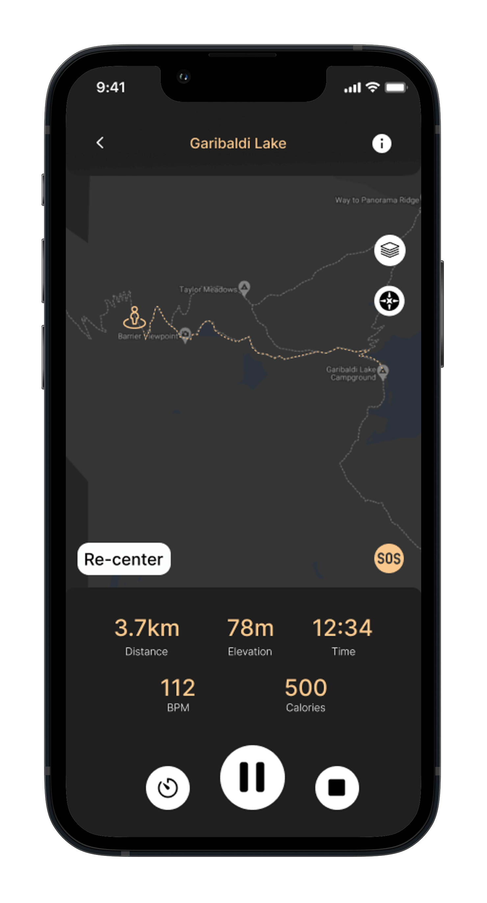
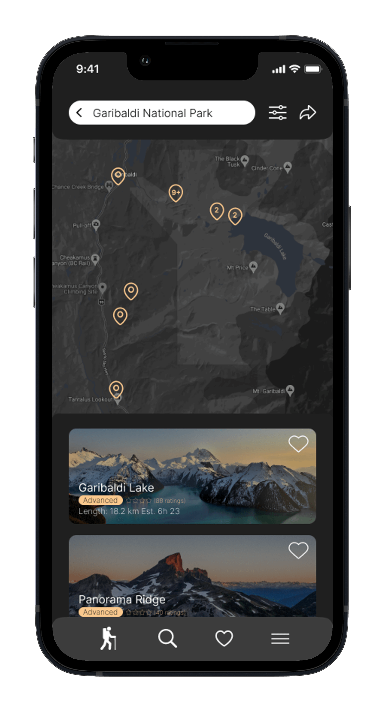
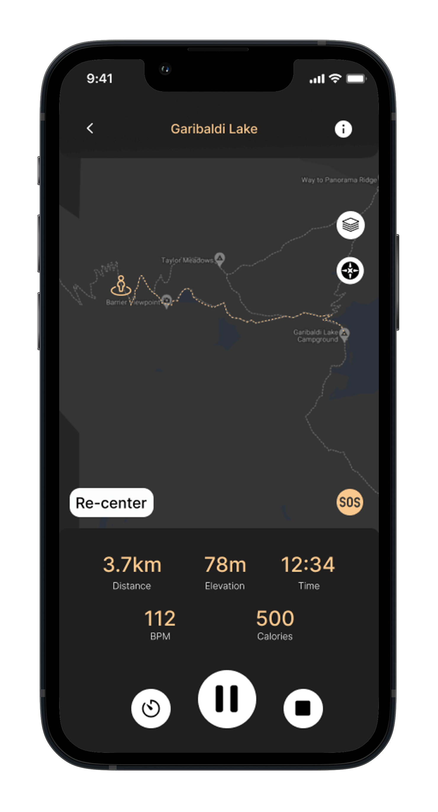

ROAM
Overview
Crafting a Hiking Companion for Trail Seekers
Reliable trail information, connectivity issues, difficulty seeking trails, proper equipment, and accurate conditions - common hiking dilemmas that needed solutions.
Role
UX Strategy, UI Design
Software
Figma, InDesign
Timeframe
27 Hours

Objectives
Accurate Trail information with regular updates to trail conditions, and closures.
Efficient search capabilities where users can filter and search based on specific criteria.
Real-Time weather integration and trail-specific conditions allowing users to plan accordingly.
Offline functionalities providing real time details even in remote locations.
Assessments & Fact Findings
All insights derived from surveys and interviews helped to ensure ROAM effectively addressed user pain points. I conducted thorough research methods including interviews, surveys, and empathy mapping to understand where room for improvements can be made from a user’s perspective. Evaluating other leading competitors were also done to understand gaps in existing solutions.
This analysis opened doors for ROAM to excel in areas like offline functionality, personalized features, and real-time weather updates. All of my insights gained were then compiled into a user persona, scenario, user journey map and a user flow.
Wireframing & Enhancing UX
Beginning with low-fidelity wireframes, I was able to map out the overall layout and structure of the app. The initial screens developed had a strong emphasis towards key interactions within the app, following the user flowchart and ensures that the primary functions for trail searching and navigation were displayed. This allowed for prototyping at an early stage of the project and to identify where optimization was needed.
Feedback from this phase highlight that there was a clear need for a more robust filtering system which led to the development for more detailed options such as difficulty, length, elevation gain and duration.
Transitioning into the hi-fidelity stages, I realized that visual appeal plays a large role when hikers make decisions which leads to a potentially cluttered visual design and an overload of images. Therefore, I opted for a dark theme with several background overlays underneath crucial interactive elements to avoid confusions, reducing the cognitive load and assure users navigate throughout the app seamlessly.
 




Results & Next Steps
Throughout the development of the ROAM app, I gained valuable insight into the design process and importance of research and feedback. Using various UX research methods allowed me to adopt a user-centric approach, make informed decisions that guided the design choices and uncover usability issues early in the design process.
Looking forward, I see several opportunities for improvement. I plan to focus on improving key interactions/functionalities within the app such as a sign-up process that includes a preference questionnaire, crafting processes for writing reviews and posting images and enabling connections among ROAM users.
Overall, ROAM has been a rewarding experience that not only enhances the trail discovery for outdoor enthusiasts, but also helps to motivate individuals to get outdoors and enjoy the physical and mental health benefits that hiking has to offer.